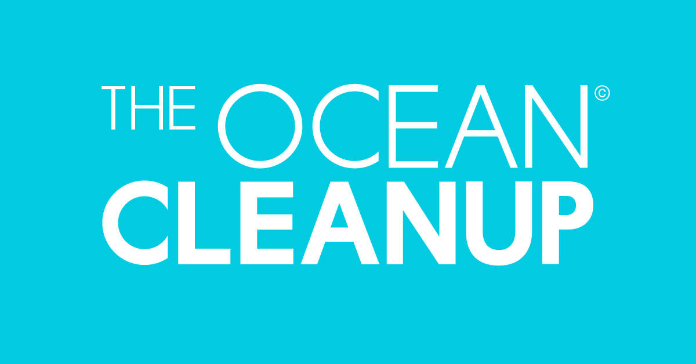
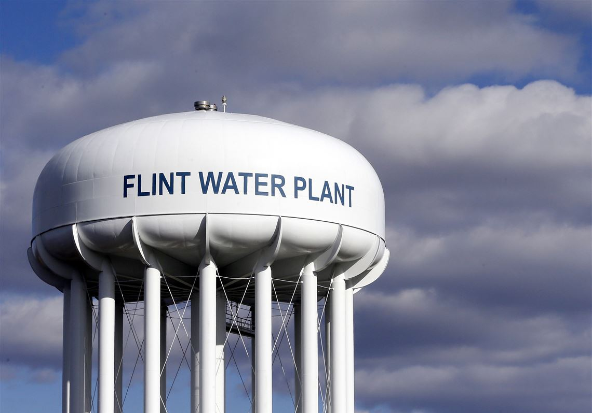
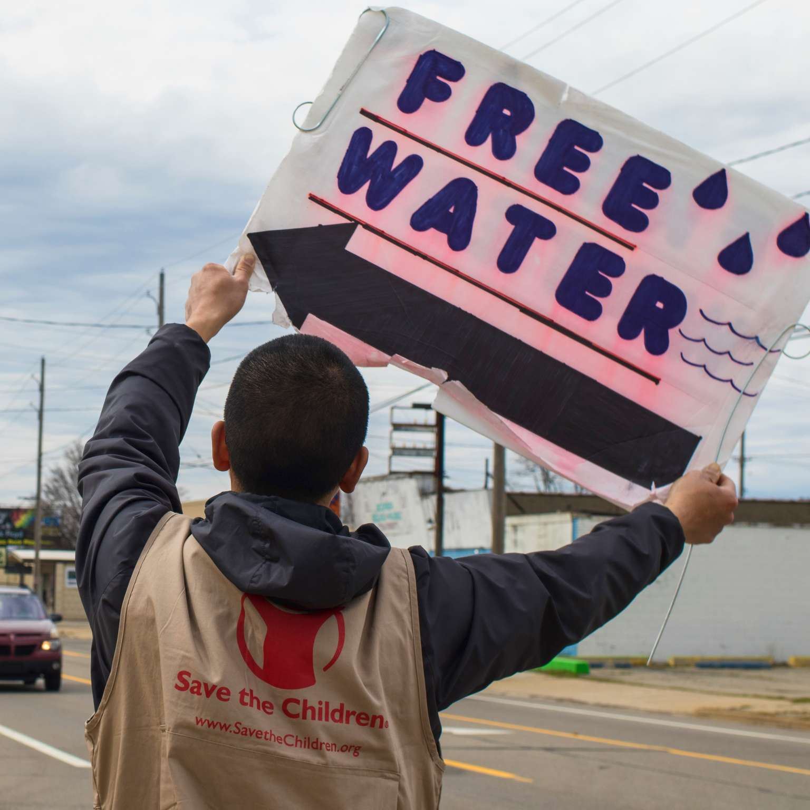
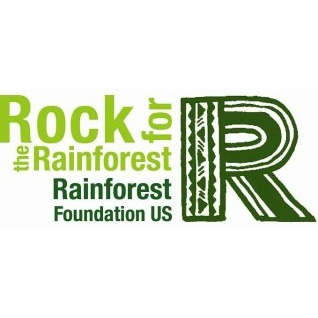

Ocean Cleanup

Ocean Cleanup is a non profit organization that was founded by 18 year old Dutch inventor, Boyan Slat back in 2013 in his hometown of Delft, The Netherlands.
They develop advanced technology to help get rid of the plastic and trash in the ocean.
The System 001/B they created, moves through water at a constant speed working with the oceans current to get rid of the plastic.
Visit their webiste to learn more about their accomplishments.
Flint Michigan Water Crisis

The Flint Michigan Water Crisis began in 2014, and has resulted in 12 deaths.
To this day, citizens of Flint still do not have clean water.
There are many charities that you can donate to, to help families in Flint get clean drinking water.
Jaden Smith’s foundation “Just Water” has created a mobile water treatment system.
The system is called “The Water Box”, it help filters lead and any other contaminants in the water.
Save The Children

Save The Children is also another organization that focuses on helping Flint get clean water.
Their mission is to help children ages zero to eight, as well as pregnant women.
They strive to ensure children and pregnant women have access to clean drinking water, healthy food and early child development support.
To learn more or donate to the Save The Children cause, visit their webiste
Rainforest Foundation US

The Rainforest Foundation US works to protect the rainforests of Central and South America. They work with indigious communities whom call the rainforest home.
This charity invests in indigious communities to strengthen their land security and train them to use technology in order to protect the rainforests.
The organization says, “We build networks of indigious technical experts who manage and analyze satellite data, monitor their forests and take action to keep illegal loggers, miners and traffickers off their ancestral lands.”
For more information or if you would like to donate, visit their
webiste